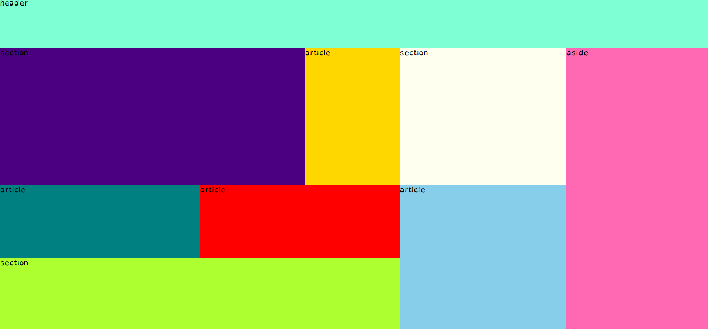

Med den informtion jag har fåt hemma tolkar jag uppgiften som att jag ska skappa en sida för en resturang med en veldigt unik förselgnings metod och målgrupp. Jag har bestemt mig för att göra en resturang där man äter sitande på häst eller pony. som målgrup har jag då hest fantaster och peersoner som vil öva för en lång tur på hestryg som dom inte vill avbryta för att äta. jag kallar returangen hästrest (häst resturang)
| Vecka | På lektionen | Utanför lektionen |
|---|---|---|
| 47 | skis homepage och grid för home page | loga |
| 48 | skis meny sida och grid för meny sida | innehåll i hopmepage |
| 49 | skis för sitsta sida(kanke ett bildkolage eller "hästbokning" och grid för sista sida | länka sidorna |
| 50 | innehåll i meny sida och innehåll i sitsta sida | finnputs |
Jag har gort en skist på home page och en grid för home page. Jag fick ett bra resultat men hade ett litet problem att jag råkade döpa både heder och asidens grid area till he. Jag gorde även skisen p portretläge medan datorer är i landskapsläge för det mesta så det är något att tänka på i framtiden.
